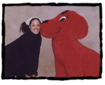
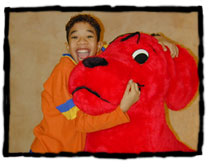
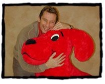
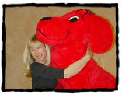
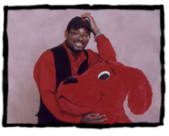
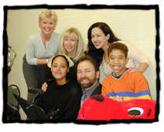

|
 |
 |
The Cast of Clifford the Big Red Dog® | |
| Clifford | |
 |
Recognize the voice of Clifford the
Big Red Dog? You probably know him best from his starring role on
Three's Company. The late John Ritter was a stage, film,
and television actor. John grew up in Los Angeles, where he went
to Hollywood High School and later graduated from the University
of Southern California. For more information on John's accomplishments,
see our special article, Remembering a Good Friend:
A Tribute to John Ritter. |
| Emily Elizabeth | |
 |
The voice of Clifford's best friend belongs to Grey DeLisle. If you've watched Rugrats, you've heard her play the villainous McNulty brothers. Grey also performed the roles of Princess Leia and Queen Amidala in the Star Wars interactive series, and was featured in 101 Dalmatians Part II. Grey gives Emily Elizabeth just the right blend of confidence and curiosity that suits an outgoing 8-year-old girl. Emily Elizabeth's optimism, combined with Clifford's loyalty, make the two of them a winning and inseparable team. |
| T-Bone | |
 |
Clifford's pal T-Bone is played by Kel Mitchell, star of Nickelodeon's The Kenan and Kel Show and winner of the 1999 Kids Choice Award for Favorite TV actor. An aspiring rap artist, Kel recently recorded the sound track for Mystery Men and Rocky and Bullwinkle. As the most cautious of the Clifford/Cleo/T-Bone trio of four-legged friends, T-Bone may look tough, but he's really a gentle, shy pup at heart. Though T-Bone is timid, he's no pushover and he's a great friend in a crisis--just ask Cleo! |
| Cleo | |
|  | Cree Summer has a long list of vocal characters in her repertoire. She has created voices for Ghostbusters, Inspector Gadget, Tiny Toon Adventures, Sonic the Hedgehog, Carmen San Diego, Pepper Ann, and Rugrats. Whew--and that's just to name a few! Cree and Cleo, the energetic pooch she plays on TV, have a lot in common! Cleo is what you might call "spirited." (She might also be called a troublemaker.) Fortunately, her good friends Clifford and T-Bone are always there to get her out of a jam--usually because she got them into it with her! |
| Charley | |
|  | Gary Leroi Grey is only twelve, but he's already got a lot of work under his belt. He played the young Tiger Woods in The Tiger Woods Story, and he has appeared on TV in Party of Five, ER, Living Single, The Cosby Show, and 7th Heaven. Gary is the voice of Charley, Emily Elizabeth's best human friend. Charley and his dad are from Jamaica, and live on a houseboat, which everyone thinks is cool. Charley's dad owns and runs Samuel's Fish and Chips Shack, which is one of Charley and Emily Elizabeth's favorite places to eat! Charley's favorite sport is soccer. |
| Mac | |
|  | Cameron Clarke has been doing voices for more than fifteen years. His features include Ninja Turtles, Dyno Riders, Mr. Bogus and Eek the Cat, among others. He provides the voice for Jetta's dog, Mac. Like Jetta, Mac has a heightened sense of self-importance. It pains him deeply that he can never be "above" Clifford. The trick to getting along with both Mac and Jetta is to see beyond their snooty exteriors. Inside, you'll find a good dog--and a kind girl. Actually, Cameron plays two characters on Clifford. Can you guess who the other one is? (Hint: He's a member of Emily Elizabeth's family.) |
| Jetta | |
|  | Kath Soucie, the voice of Jetta, is one of the top voiceover actors working today. Her movies include Rugrats, The Movie; Rugrats, The Movie II; Space Jam; Beauty and the Beast and The Little Engine and she's done extensive television work as well. Kath plays Jetta, a classmate of Emily Elizabeth's who has no little sense of self-importance. Jetta's friends like to say "she's not mean--just misunderstood." But even her friends find Jetta a little hard to take at times. According to Jetta, everything she does or has is always bigger or better. That's why Clifford drives her a little crazy--because you can't get any bigger or better than Clifford! |
| Samuel | |
|  | T. C. Carson, the voice of Charley's dad, Samuel, is best known for his starring role in the Fox comedy series, Living Single. T. C. has appeared in many plays, musicals, feature films, and television movies, including the Emmy-award-winning Fast Break to Glory. T. C's character Samuel likes to tell stories, and can frequently be found doing so at his restaurant, Samuel's Fish and Chips Shack, located on the Birdwell Island pier. |
| The Cast | |
|  | How many of these cast members can you name? Do you remember which character they play on the show? Good Luck! (Hint: The woman in the top left is not in the cast. She's the Voice Director for the actors. Her name is Susan Blu). |
|